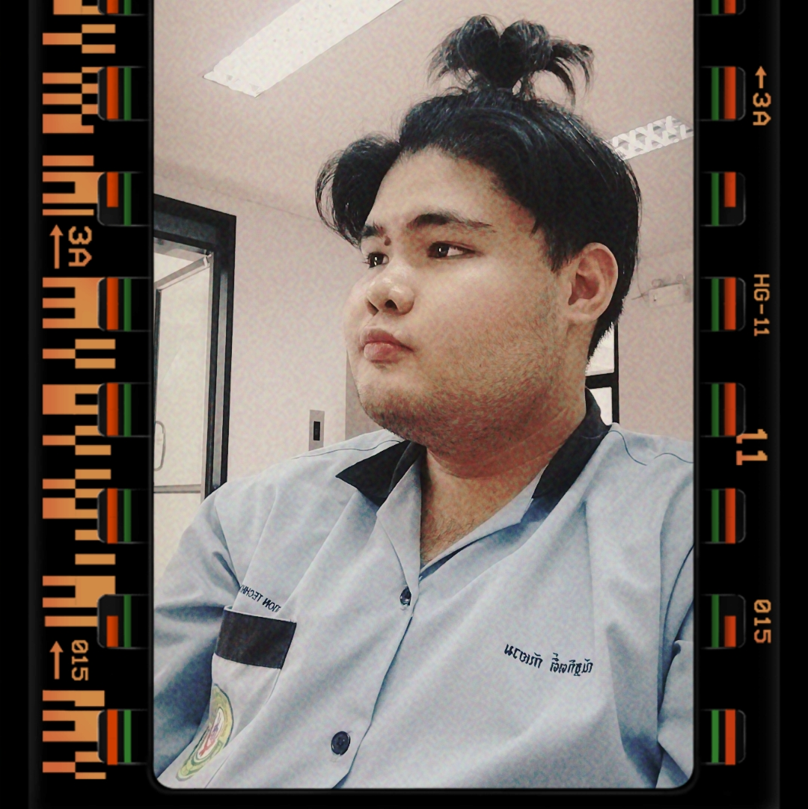
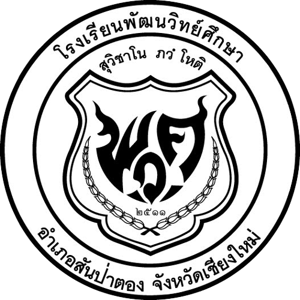

 ชื่อ ณัฐกิตติ์ กันยวม ชื่อเล่น แทน อายุ 19 ปี
เกิด 29 ธันวาคม 2545 เชื้อชาติ ไทย สัญชาติ ไทย
ศาสนา พุทธ กรุ๊ปเลือด บี
ที่อยู่ 69/4 หมู่ 5 ต.มะขามหลวง อ.สันป่าตอง จ.เชียงใหม่
งานอดิเรก ฟังเพลง,ดูหนัง
วิชาที่ชอบ งานกราฟิกและประวัติศาสตร์
อาหารที่ชอบ ข้าวผัดหมูและก๋วยเตี๋ยว
การศึกษา
ชั้น อนุบาลปีที่ 1 - ประถมศึกษาปีที่ 4
โรงเรียนศรัญย์ปัญญา
จบการศึกษา 2554
ชั้น ประถมศึกษาปีที่ 5 - มัธยมศึกษาปีที่ 3
โรงเรียนพัฒนวิทย์ศึกษา
จบการศึกษา 2560
 ชั้น ประกาศนียบัตรวิชาชีพ (ปวช.)
ชั้น ประกาศนียบัตรวิชาชีพ (ปวช.)
วิทยาลัยเทคโนโลยีโปลิเทคนิคลานนา เชียงใหม่
จบการศึกษา 2563
ปัจจุบัน เรียนชั้น ประกาศนียบัตรวิชาชีพชั้นสูง (ปวส.) ปีที่ 2
วิทยาลัยเทคโนโลยีโปลิเทคนิคลานนา เชียงใหม่